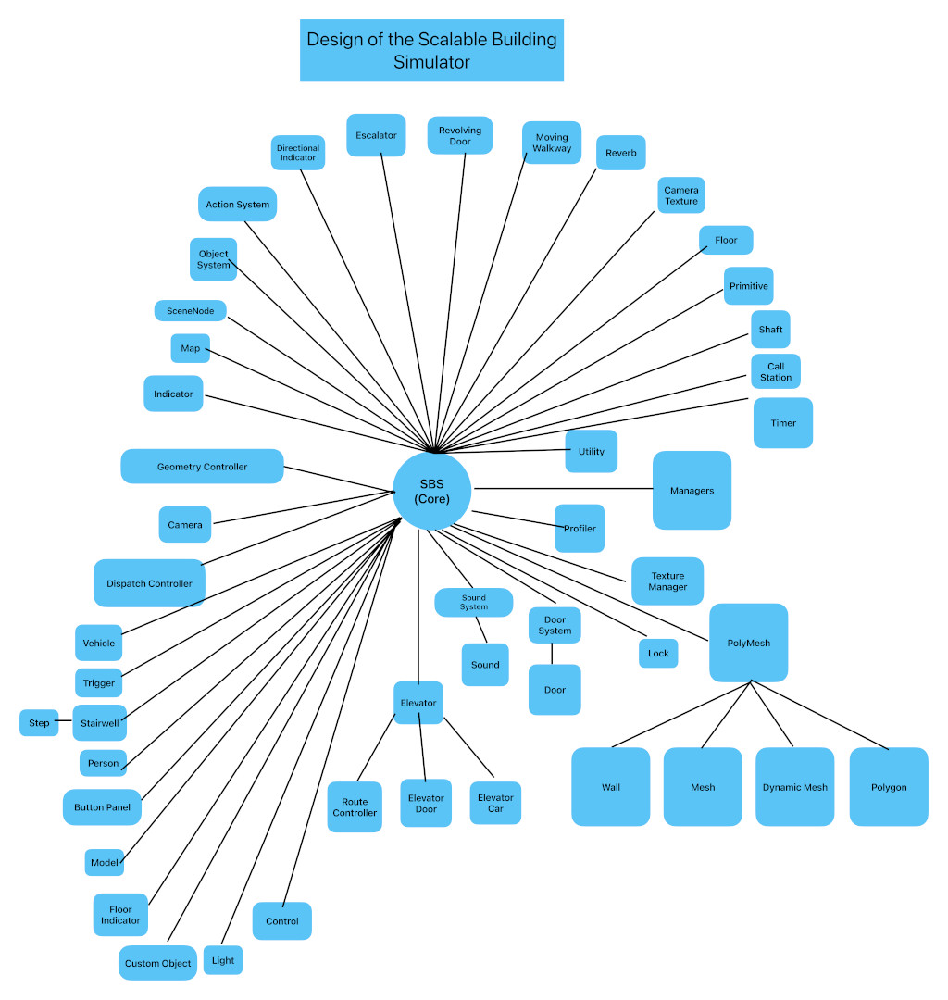

This document is a work in progress, but
details information about the internals of Skyscraper's
simulator engine, the Scalable Building Simulator. SBS
was developed as the main component of the Skyscraper 2.0
codebase, originally known as Skyscraper 1.1. This chart
shows a basic class layout of SBS:
